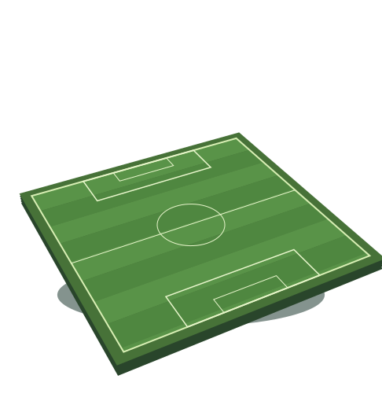
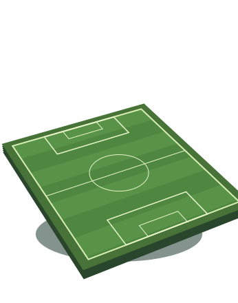

● TECNOLOGIA CHE TI LIBERA TEMPO
Meno organizzazione. Più gioco.
Stiamo lavorando a un modo più semplice per trovare un campo. Tu pensa alla partita, al resto ci pensa C’è Campo.
Scopri il progetto ↗Un progetto Digital Mop · Attualmente in sviluppo
IL GIOCO AL CENTRO


LA TUA PROSSIMA PARTITA
Un campo per domani sera?
Meno telefonate da fare. Più tempo per esserci.
01 / IL PROGETTO
Un assistente per cercare.
La scelta resta tua.
C’è Campo è il progetto di Digital Mop dedicato alla prenotazione dei campi sportivi. L’obiettivo è alleggerire l’organizzazione di una partita, dalla ricerca delle strutture al contatto per verificarne la disponibilità.
Stiamo sviluppando un assistente basato sull’intelligenza artificiale che lavori a partire dalle tue preferenze: zona, orario, tipo di campo e scelta tra indoor e outdoor. Una proposta diversa da quella richiesta deve sempre passare dalla tua approvazione.
02 / COME LO STIAMO PENSANDO
Dalla voglia di giocare
alla ricerca del campo.
Un’esperienza pensata prima di tutto per lo smartphone, semplice anche quando sei in movimento.
01
Dicci la tua partita
Scegli quando giocare, dove ti trovi e quanto vuoi spostarti. Indica il tipo di campo e le tue preferenze.
02
Affida la ricerca
L’assistente contatta le strutture selezionate per verificare le possibilità, seguendo l’ordine che hai scelto.
03
Resta aggiornato
Segui l’esito della richiesta. Se serve cambiare orario o valutare un’alternativa, sei tu a decidere.
Web app mobile · WhatsApp · Telegram · Telefono
Funzionalità e canali previsti: disponibilità soggetta al rilascio del servizio.
03 / DUE COSE DA SAPERE
Il progetto,
senza complicazioni.
Non da questo sito. Questa è la pagina informativa del progetto: C’è Campo è ancora in sviluppo e qui non vengono raccolte o confermate prenotazioni.
Digital Mop è il nome del progetto tecnologico che sta sviluppando C’è Campo, l’esperienza dedicata alla ricerca e alla prenotazione dei campi sportivi.
È uno dei canali previsti per dialogare con l’assistente e ricevere aggiornamenti sulle proprie richieste. Il collegamento del canale è in preparazione; questa pagina non attiva conversazioni o iscrizioni.
No. La disponibilità deve essere verificata con la struttura. Una richiesta di ricerca non equivale a una prenotazione confermata.
Non ci sono moduli, pagamenti, iscrizioni o strumenti di analisi aggiunti da Digital Mop. Il sito è ospitato su ChatGPT Sites, la cui infrastruttura può trattare dati tecnici di accesso. Le informazioni relative al trattamento dei dati del futuro servizio saranno disponibili prima della sua attivazione.
Ci vediamo in campo.
Stiamo costruendo C’è Campo, un passo alla volta.
Questa pagina racconta il progetto e le funzionalità previste.
Progetto in sviluppo